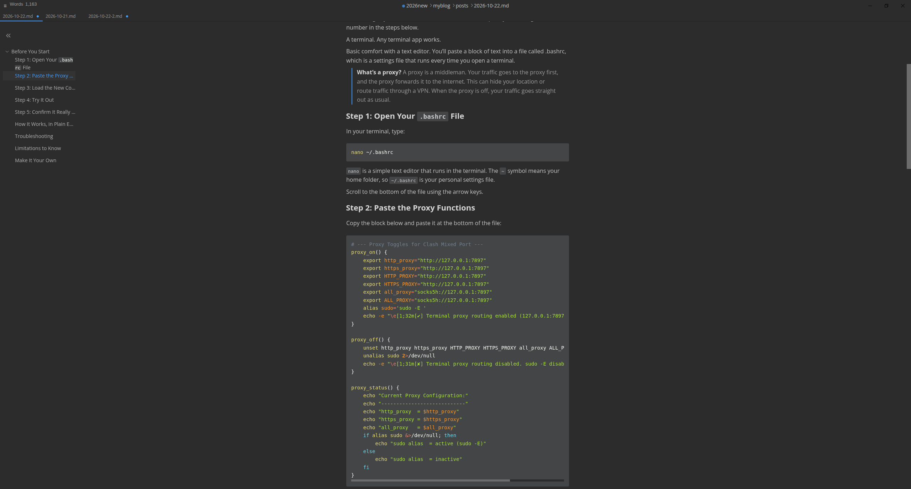

Markdown Editor Recommendation
I write my blog posts in Markdown, a simple plain-text format where symbols like # for headings and ** for bold show how the text should look. I wanted an editor that looks similar to Obsidian, a popular app for taking notes in Markdown. I started with Ghostwriter, a lightweight Markdown editor that was easy to install. On Fedora, a Linux distribution, I only needed to run sudo dnf install ghostwriter, and it was ready to use.
Unfortunately, Ghostwriter had several serious display problems on Fedora 44, and they slowed down my writing. So I kept looking for a better option.
Many people wonder why I didn’t simply use Obsidian. Obsidian is an excellent app, and I like it. It organizes everything into “vaults,” which are collections of notes that you can keep in one place. I have also installed a few community plugins to manage attachments and photos, and they work well for notes. However, the way Obsidian organizes vaults doesn’t match how I store my blog posts. What I need is a simple editor where I can open a Markdown file, write for the blog, and not worry about accidentally disrupting my blog’s folder structure.
My search ended with MarkText. It is heavier than Ghostwriter, but it does two things I need very well:
First, its live preview shows the formatted result as I type, so I can see headings, bold text, and links without switching windows.
Second, once I add headings, it automatically builds a clickable outline on the left side of the screen. I can jump between sections of a long post with one click, which saves a lot of time.

If you want a Markdown editor that is simple and focused on writing, rather than a full note-taking system like Obsidian, I highly recommend MarkText.